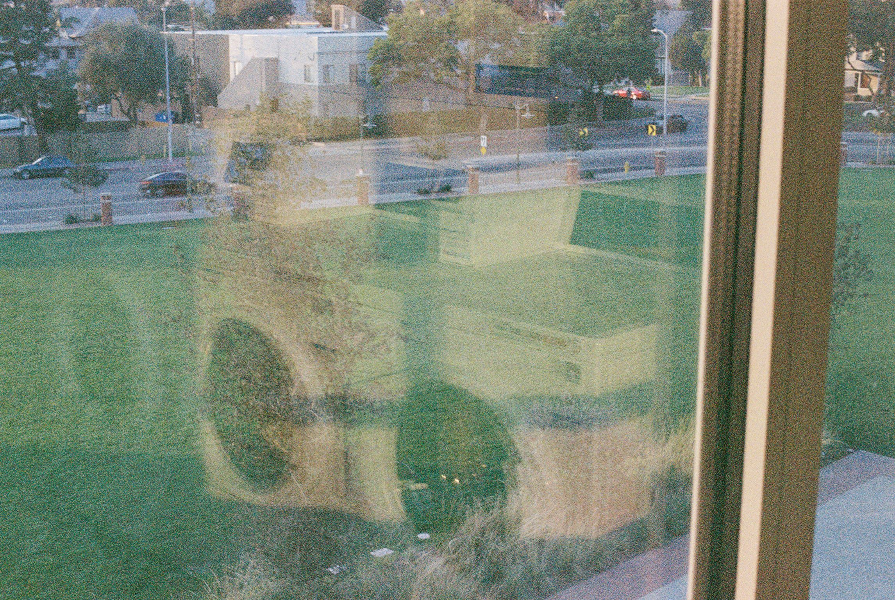
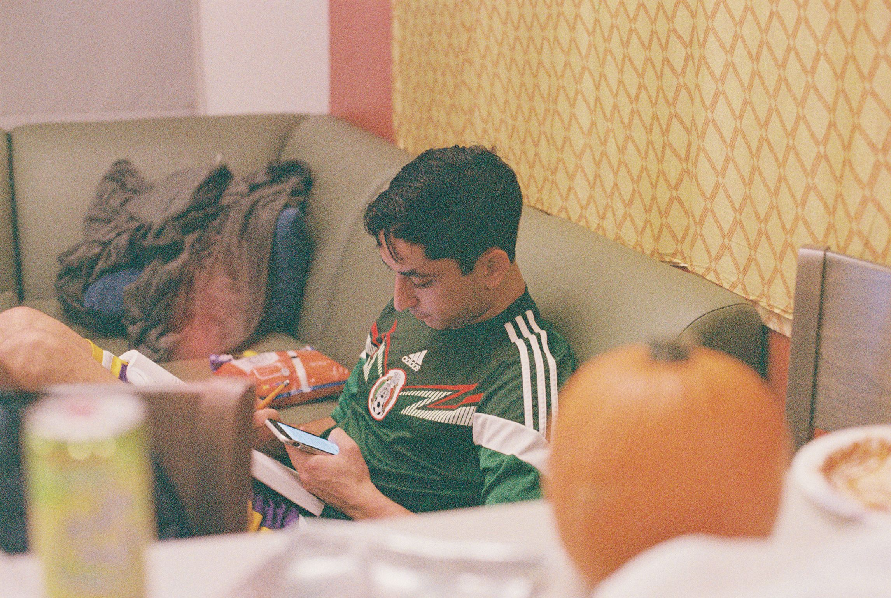
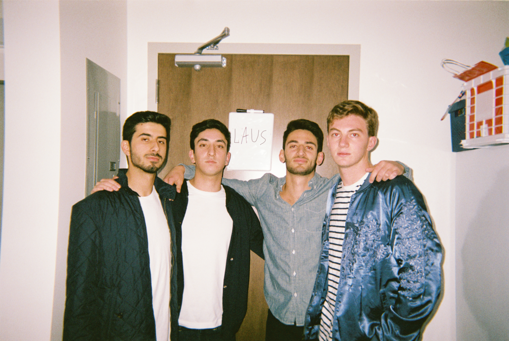
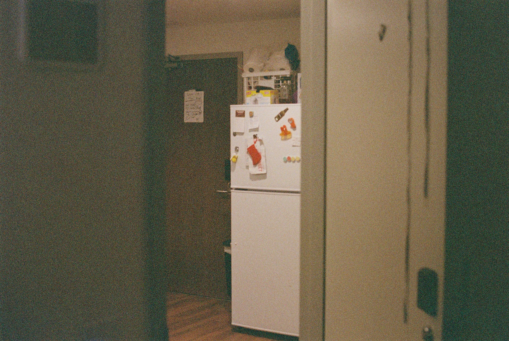

I moved into the village when it was brand new.
Nobody else had lived in my room, and my mom came to school early to buy stuff for it.
One day while I was at work, she went shopping for 2 hours.
When I asked her to pick me up from work to drive me to the village, she said she couldn't, because she had literally filled the car with stuff.
The only thing open in the Village when I moved in was Cava.
I lived there for one semester before I moved, but I will always be the first one in 3415. -MP



